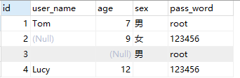
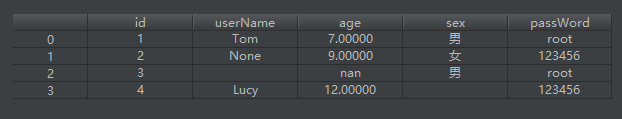
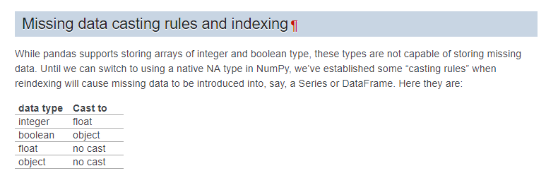
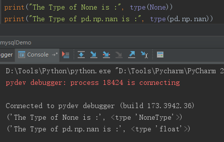

基于pandas的数据分析之数据类型转化踩坑总结
从以下两个方面来讨论在实际工作中所遇到的数据类型转化问题
- 由于数据缺失导致DataFrame中int转float
- 由于数据类型字符串导致csv加载到DataFrame时String转numeric
环境依赖
MySQL 5.7.17
Python 2.7
MySQL-python 1.2.5
Pandas 0.18.1
一、由于数据缺失导致DataFrame中int转float
问题描述
将MySQL的表结构转为Pandas的DataFrame时，会出现如下问题：
- age列原本为int类型，但是在DataFrame中转化为float类型
- 对于SQL中的None值，在DataFrame里有多种表示方式
数据源信息如下所示：



原因分析
通过查阅官方文档得知，pandas在处理缺失值上，拥有一套自己的转化逻辑；具体的转化规则如下图所示：

不难看出，当int型数据列包含空值时，会将该列转化为float类型；个人理解：在pandas中，对于数据类型的空值，是统一用Nan来表示的；Nan在pandas中是一float类型，代表一种特殊的值，而非其他语言中所定义的空对象；因此对于int类型的空值，因无法表示相应的空值，所以需要先做数据类型的转化，然后用Nan来表示其含义。

通过这个例子，希望在理解numeric类型转化原因的同时，能够提高对异常数据的警惕性和敏感度；理解业务，实现需求的同时，能有准确、有效的进行数据降噪，从而提升数据的真实性和可信度。
由于数值类型字符串导致从csv加载到DataFrame时String转numeric
缺失值
缺失值分别在MySQL、Python和Pandas上的表现形式如下所示：
| / | 字符串空值 | 空字符串 | 数值类型空值 |
|---|---|---|---|
| MySQL | Null | ‘’ | Null |
| Python | None | ‘’ | None |
| Pandas | None | ‘’ | Nan |
由于字符串空值和空字符串这两种情况在写到csv的效果完全一致，从而导致在读取数据时无法做区分。如果后续业务明确要求区分处理这两种情况，则会因为一次文件的读写操作导致数据失真。基于此原因，建议在实际开发的过程中，在同一个team下规定一个唯一的字符串标识符来代表None值(参考数仓建设)，从而有效区分字符串空值和空字符串的区别。
数据类型转化
通过pd.read_csv方法加载csv文件时，如果某一列为数值字符串，则该列会别识别为numeric类型(eg：int, float)，而非原始的String类型。Eg：将前文中MySQL数据表中的sex列和passWord列的内容修改为纯数值，数据集及各列对应的数据类型分别如下所示：


并将该表中的数据先写到本地csv文件；然后通过pd.read_csv读取文件时发现sex列被识别为int类型，passWord列被识别为float类型。数据展示效果及各列对应的数据类型分别如下图所示：


所以在基于pandas操作csv文件时，需要特别注意这种情况。如果在后续的分析中，需要保留原始数据格式，则在读取csv文件时，需要通过dtype参数来显示的指定目标字段的数据类型，从而保证数据类型的前后统一。


通过上述案例分析，希望今后在操作csv文件时注意区分空字符串和字符串空值在不同应用场景下的实际意义，以免造成潜在的数据隐患。